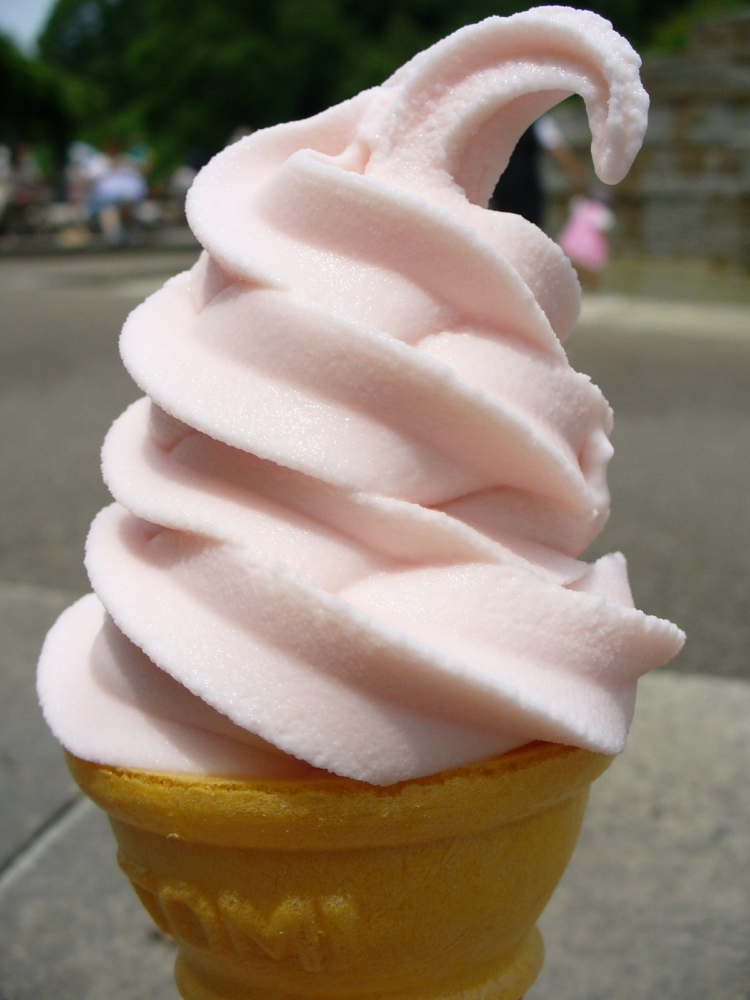

Ice Cream

What is Ice Cream?
Ice cream is a frozen dessert typically made from milk or cream that has
been flavoured with a sweetener, either sugar or an alternative, and a
spice, such as cocoa or vanilla, or with fruit, such as strawberries or
peaches. Food colouring is sometimes added in addition to stabilizers.
Ingredients
- Heavy Cream
- Sugar
- Salt
- Egg Yolks
- Whole Milk
Steps
- Pour heavy cream into sauce pan with sugar and salt.
- Warm mixture until sugar dissolves, then add in milk.
- Ensure mixture has cooled before mixing in egg yolks.
- Churn mixture in an ice cream machine.